前言
{% aplayer "Jump!" "Two Steps From Hell" "/musics/Jump!.mp3" "/musics/Jump!.webp" "" %}
致 谢
冀大读研已三载，
论文如锁困英才。
千次 CV 终残稿，
争作佣工把文裁。
代码乱时徒发呆，
学术牛马困高台。
莫问前程何处去，
焚稿断笔已狗带。
伟大的冀大用河北的财政为社会培养出了又一批研究生！然而宿舍里却一个也没有选择留下来建设河北😭~晋爷、豫爷和冀爷纷纷选择去北京给京爷当🐮🐴。
于是决定毕业临走前最后去一次北京拜访一下这三位爷！
导览
将军莫虑，且看此图！
{% hideToggle 地图绘制笔记 %}
觉得旅行类的博客画个地图来展示会比较有条理一些，于是下班的时候时不时来研究一下 GIS 技术（写博客的时候已经上班一个月了😭）！目前钻研出的技术方法是：
注意
-
在 中国地图 - 中国卫星地图 - 中国高清航拍地图 - 便民查询网地图 处获得关键地点的经纬度坐标（腾讯地图给出的比较精准）：
csv name,longitude,latitude 河北大学,115.56846857070924,38.87942872922854 保定东站,115.60051560401917,38.86403842649733 北京西站,116.32130026817323,39.89472439091909 速 8 酒店,116.36449456214906,39.839890554187264 天坛公园,116.41299962997438,39.88138064199608 东湖渠,116.4678078889847,40.0106848655811 国贸,116.46059811115266,39.90865618869006 国家图书馆,116.32323145866394,39.94538542271254 雍和宫,116.4173072576523,39.94708428298833 西单,116.37365698814394,39.910995085503465 稻香湖路,116.18824124336244,40.068958692181546 云岗,116.1697554588318,39.81557453789907 知春路,116.34006500244142,39.976399711154286 北京南站,116.37903213500978,39.865021471166884 -
将数据导入到 QGIS 中，微调一下样式，导出成
.pdf格式。 -
使用 Adobe Ai/PS 处理
.pdf格式，导出成.svg格式（SVG 配置文件（V）选择SVG Basic 1.1）。 -
改一改代码，收工！
{% endhideToggle %}
鼠标操作相应地点即可获取提示或是跳转至相关标题！
- 蓝色是 6.19 路线；
- 橙色是 6.20 路线；
- 红色是 6.21 路线；
- 紫色是 6.22 路线。
晋爷和豫爷的工作地点实在是太偏了😭~不然我还能将北京的地图画得更小一些！
正文
6.18
15:00 最后一次组会
6.18 周三导师继续组织组会。本来我们研三是不用去的，但是想着我们几个太闷骚了都没组织毕业聚餐，也没跟师弟师妹道别，属实是有些不礼貌，所以还是决定过去参加一下😵。
前面的事情都说完后，俺作为热心师兄给师弟师妹们说了一下后面找工作可能的一些注意事项：平常少打点游戏！要有危机意识抓紧点时间。有空还是要多学一点工作相关的东西，能实习最好还是去实习，这样后面找工作的机会会更多一些。
最后把陪伴了两年多的电瓶车送给了师弟，师兄太太拉跨了没有什么东西能给，就送部电池快不行了的小破车吧😭~
组会完毕就得上去拿双证了。
15:30 Become AI Master!
之前辅导员一直没有给出双证领取的准确时间，只是一直说 6.19《左右》。结果 6.18 大中午在群里说下午马上就可以领毕业证了😇，就挺突然的。然后在冀大的日子也就稀里糊涂地结束了。
Free of that blasted tower! 都说读研的最开心的只有拿到录取通知书和拿到毕业证的这两个时刻。但！
- 因为自己是一个调剂来的
被逼卑鄙的异乡人，所以拿到录取通知书的时候没啥感觉🙁。 - 读研痛苦的时候总是想着拿到双证的那天再也呆不用在这个破烂的小城，再也不用处理各种草台班子之事，会有多开心🥳。
- 结果最后一个学期没啥论文压力，也就边面试对线 HR + 处理时不时烦你一下的表格 + 偷跑旅游就稀里糊涂地结束了。真到了拿证的时候却觉得之前的事都已过去，更没有什么好去计较，而且马上没得再玩了要换个地方接着当牛马了呜呜呜😭，就更感觉平淡了。
18:36 重置电脑
{kind=link}
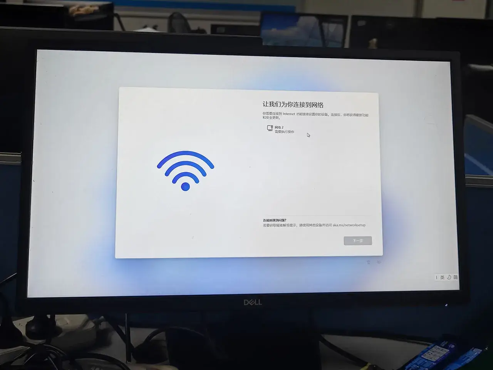
要走了学校的电脑得清空了，虽然也没咋用过。
觉得今年以来几乎没有什么时间是真正地闲着，旅游也一直都是特种兵式的，其他时候也基本都是干完一件事马上就干另一件事😪。因为要尽快到公司报到，所以也没有留下什么什么歇息的时间。计划是 6.19 这一天把宿舍清空，先去北京再去南京，最后回家😎。期间的车票和住宿就见机行事了。
21:27 市场开张！
{kind=link}
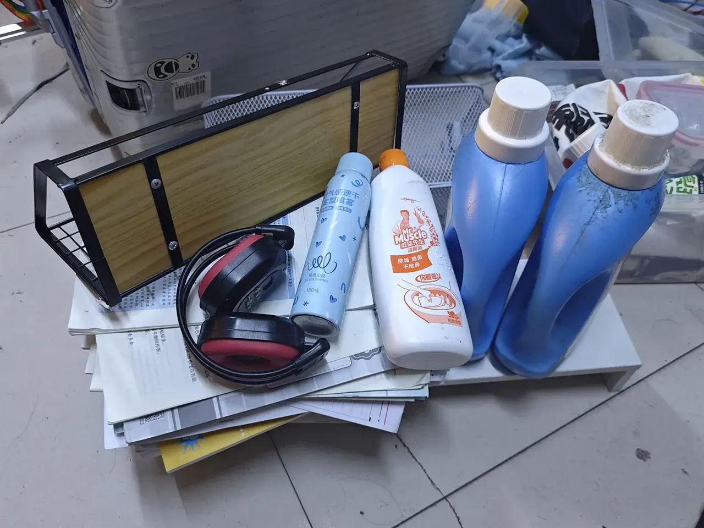
能寄的就寄，不想要的就尝试送出去，实在不行的就只好扔掉了。
6.19
08:44 冀中寄
{kind=link}
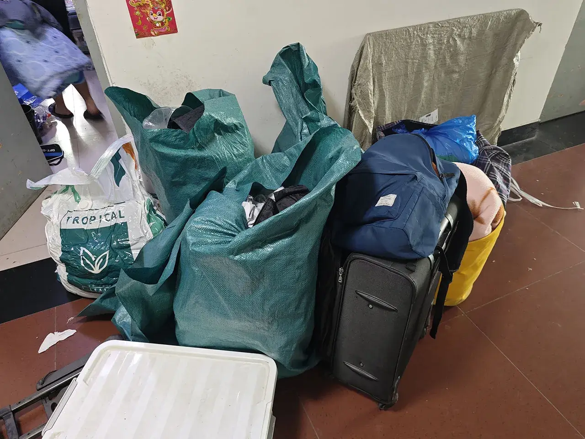
宿舍难得最后一次齐活，大家一起互相帮忙运送着东西，就数我的乱七八糟东西最多了🤪！算了下最后寄回家 8 大袋￥537。问题不大，把我这个人寄回家都不止这个数😭。
16:01 宿舍楼屋檐下
{kind=link}
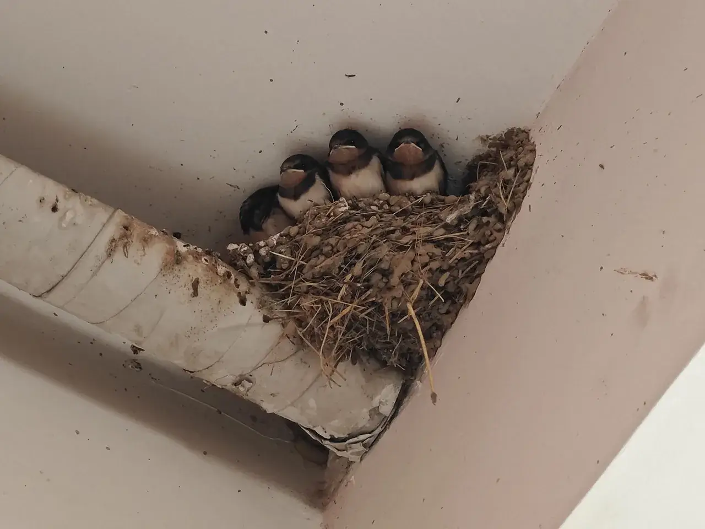
燕子留在了河北，而我即将奔向南方~
行李运送完毕，电瓶车送给师弟！
16:20 道别宿舍
{kind=link}
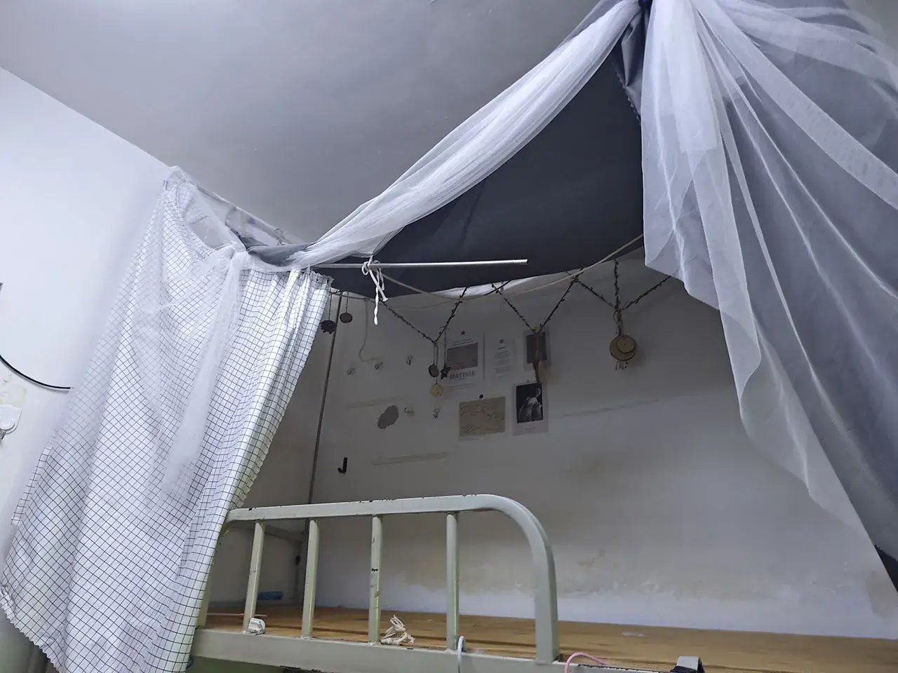
收拾宿舍的时间比我想象得要快，因为不想睡没被子的硬板床和没空调的房间，就晚上直接躺北京好了。晋爷豫爷和冀爷后天还会再见到，就多跟可能再也见不到的湘爷多道别几遍了😭！
16:36 这回是真润咯！
{kind=link}
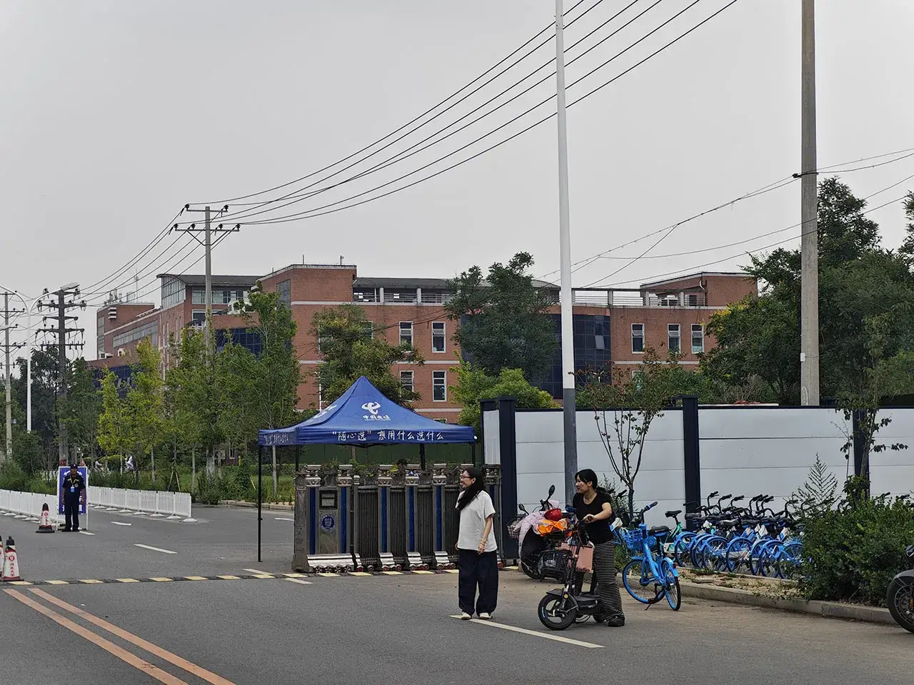
订了用积分兑换的车票。G512 17:39 保定东-18:21 北京西，-7000 积分。最后一次离开冀大也是匆匆忙忙的，比想象中平静得多，没留下什么思绪。
走之前想着跟卖我经常吃的肉夹馍和椰奶的阿姨道个别！她们听我要毕业了便说以后可以常回来看看，还说这单要请我😭，我还是婉拒了，最后肉夹馍阿姨多给我补了个蛋。
打车去东站，￥10.69。
16:50 最后的保定东？
{kind=link}
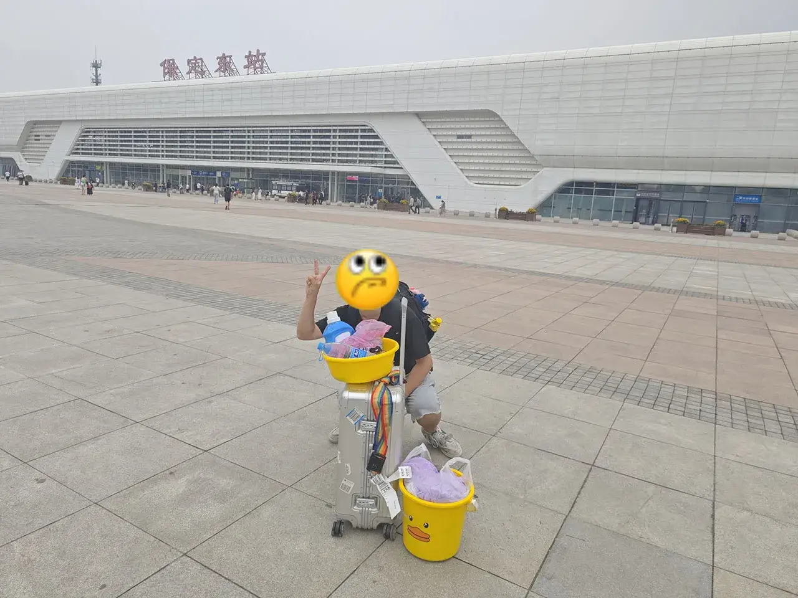
寄走了大包小包还是带了大包小包~
{kind=link}
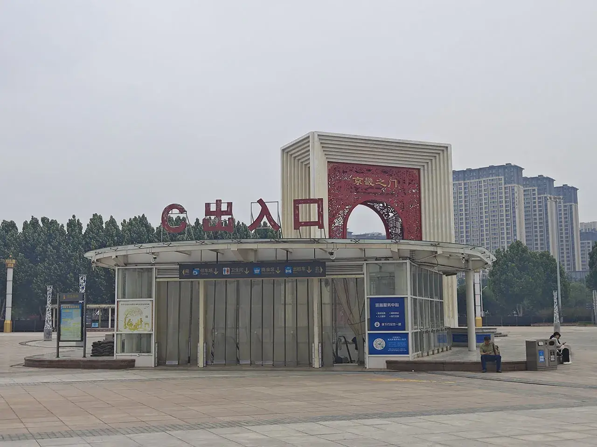
这么近~那么美~周末离开了河北~
17:56 G512
{kind=link}
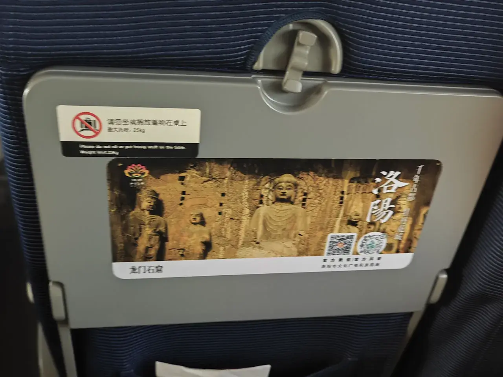
B 站上居然还有这班列车的实况。但是在高铁上坐着靠过道的位置，没得看风景（也看了太多遍了不感兴趣），玩一会儿手机就到了。
订了个离北京南站较近的速 8 酒店，6.19-6.22 共 3 个晚上￥759，又贵又小😭，凑合着睡吧。
19:23 到达酒店
{kind=link}
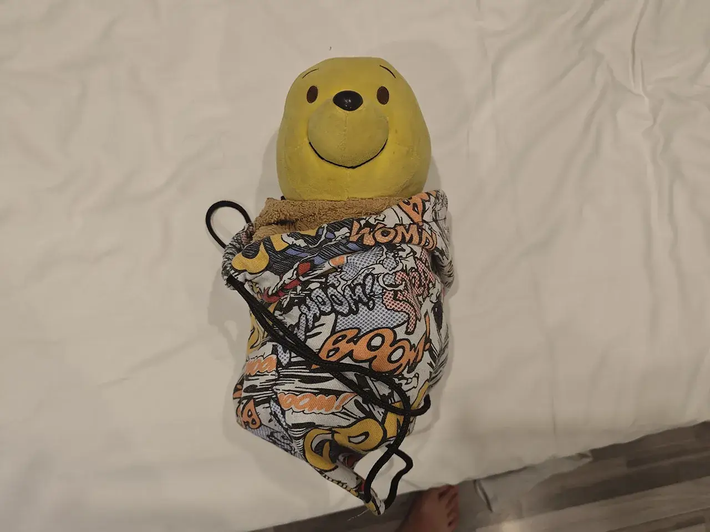
北京西站-7 号线-菜市口站-4 号线大兴线-公益西桥站，￥4。我宣布这是迄今为止我见过的最挤的一般地铁！两分钟一趟的 4 号线地铁挤得连进都进不去咯😭~只好等下一班接着挤。
在之前去了十几次北京后，我终于对北京的景点产生了疲倦，这次来北京也就以跟同学聚餐为主，省着点力气去南京🤩！直接洗澡睡觉。
6.20
09:02 庆丰包子
晋爷、豫爷和冀爷还在河北休整中。离开北方前要最后见一次小迷糊！之后可能就是在南方见了。
{kind=link}
{kind=link}
小小的也很可爱
北京的菜量一点也不像北方😭！包子小小的一点也不管饱，炒肝因为自己吃不惯内脏吃两口就不吃了！
10:11 永定大门
{kind=link}
想着现在去东湖渠太早，可以先去天坛看看。想着公交车可以直达天坛就选择了公交，结果公交车上慢慢腾腾，还都是老北京大爷大妈，检票员还说建议给老人让座，干脆不坐了！下车骑共享单车算了😵。于是沿着中轴南线前往天坛公园中……
10:22 天坛公园
{kind=link}
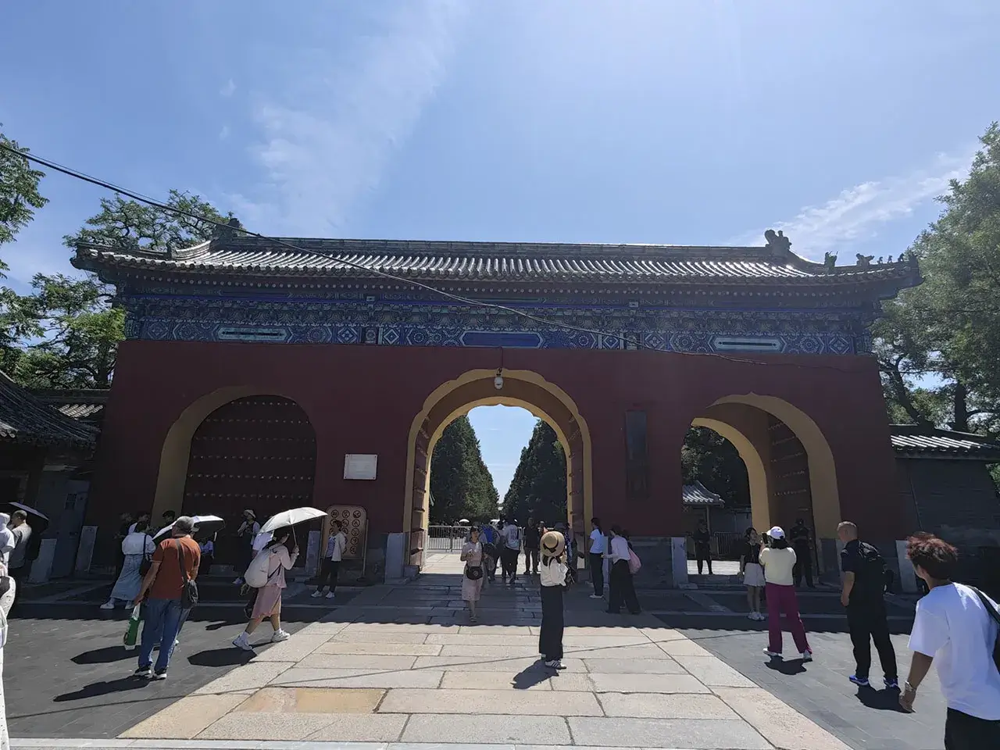
这时候又觉得到天坛公园待久的话容易赶不及去东湖渠😵，那就不仔细看了直接穿过吧！购买大门门票￥15。
10:29 林荫大道
{kind=link}
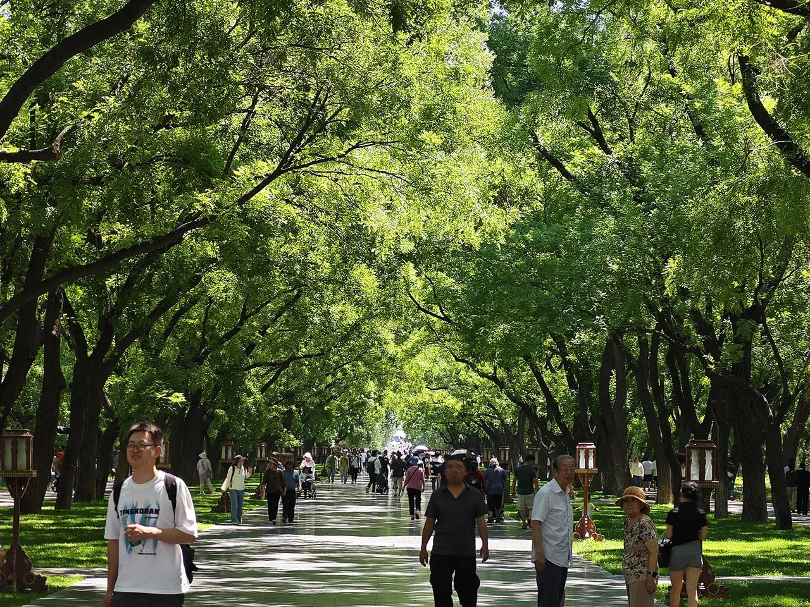
树木茂密得似乎将天空都染成了绿色，是盛夏的气息！
10:39 祈年大殿
{kind=link}
{kind=link}
北京的招牌
匆匆穿过！天坛站-5 号线-蒲黄榆站-14 号线-东湖渠站，￥5。
11:07 漫漫长路
{kind=link}
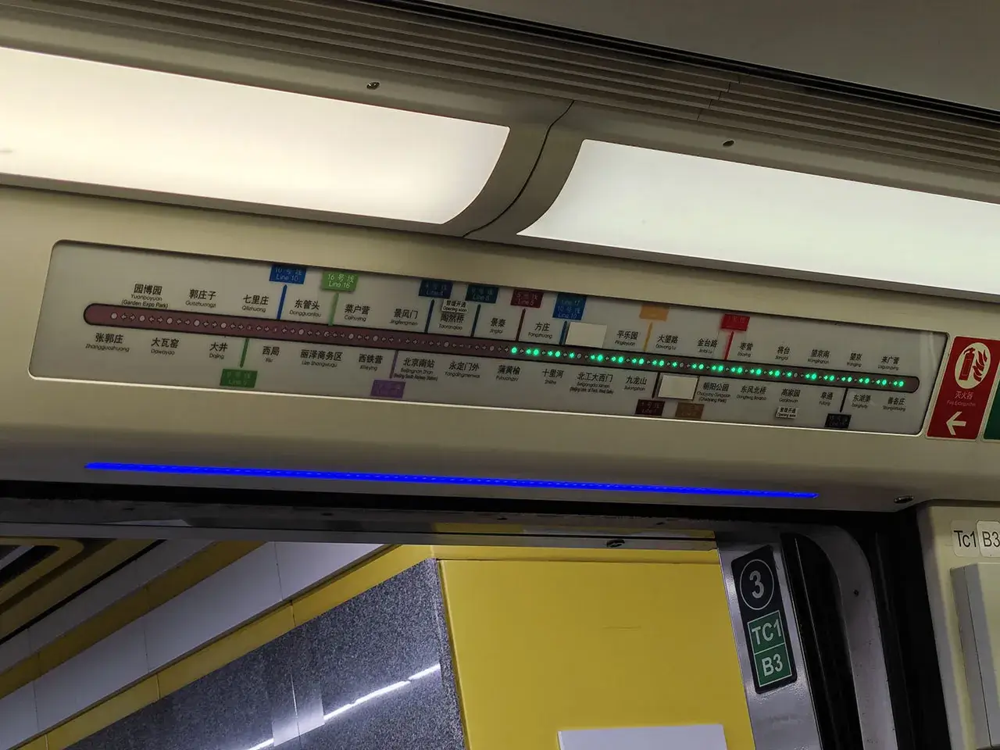
在北京似乎无论去什么地方都要一小时起步，小迷糊还觉得我出发得早了，其实最后也差不了多少时间。
12:32 海底捞月
{kind=link}
聪明的小迷糊说点一个鸳鸯锅，然后一边是清汤锅，一边是番茄锅，当番茄锅用会更省钱一些😇~
在我之前找到了一份游戏开发相关的工作后，因为实在担心工作强度还是主动下岸了，就此退出了游戏开发界。不知道在游戏开发界混了三年的小迷糊是否还怀揣着当年对游戏开发的梦想？
与研究生班里考公求稳定的风气不同，小迷糊认为要多跳槽，才能学到更多的知识，也才能追求更多的薪水。
简单地吃完，我的学生证刚刚报销不能享受 6.9 折服务了😭！只得全款两人共计￥241（好贵啊！）。小迷糊还得继续上班，遂分别。
13:53 酒仙桥路
{kind=link}
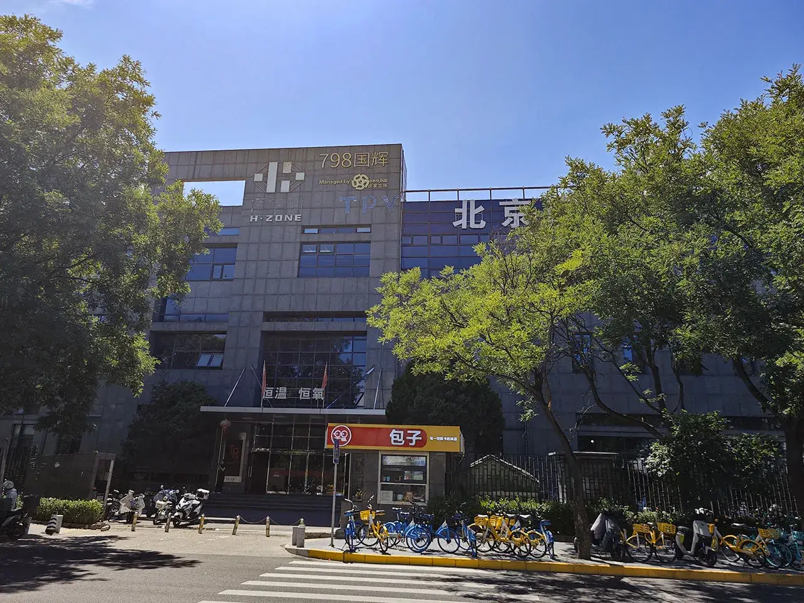
吃饭的地方离一个神秘工厂很近。东湖渠站-地铁 14 号线-将台站，￥3。然后共享单车踩过去看看。
看着只是一个办公室而不是工厂。
14:41 国贸三期
{kind=link}
{kind=link}
小小高楼
也没啥想逛的，就回酒店的过程中拐一下国贸吧。五年前第一次去北京在天坛上看着觉得这个中国尊好高，现在发现这要是放在天津的话高度只能排在第三！
17:11 著名比萨
{kind=link}
上次跟小迷糊在北京也是吃达美乐比萨，这次在北京索性自己买一张。上面是海鲜和土豆，中间是巧克力夹层。味道好极了，就是怕火气有点大，于是还点了份沙拉，味道苦死了，不浪费硬着头皮吃掉了😇。
这天以后，晋爷和豫爷已在北京准备就绪，冀爷选择了回家，第二天也得向北京集合！下周他们仨就要开始上班咯😭~
6.21
07:21 前去集合
{kind=link}
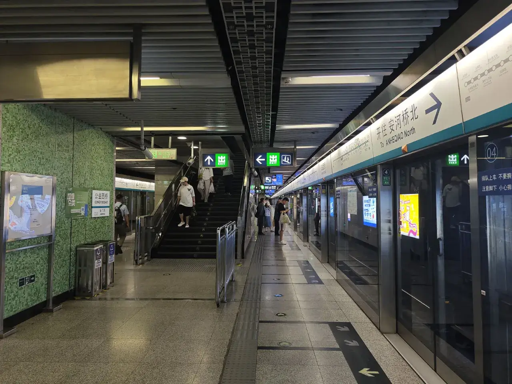
正如之前地图展示的那样，尽管大家都住在北京，但是在北京也是天南地北了。为了找一个合适的集合点，我提议在国家图书馆集合，晋爷可以 16 号线地铁直达，豫爷可以先坐公交进来再转地铁，冀爷就在附近过去也是很快！自己还可以在图书馆里摸摸鱼休息一下！真是太完美了😎！
08:05 国图北馆
{kind=link}
{kind=link}
贪吃蛇
国家图书馆，据说狗来了都得读本书再走！9 点开门的馆在 8 点出头的时候就已经在门口排起了长龙，大家都很默契地用书包排队然后躲在后面遮荫。
08:48 进馆排队
{kind=link}
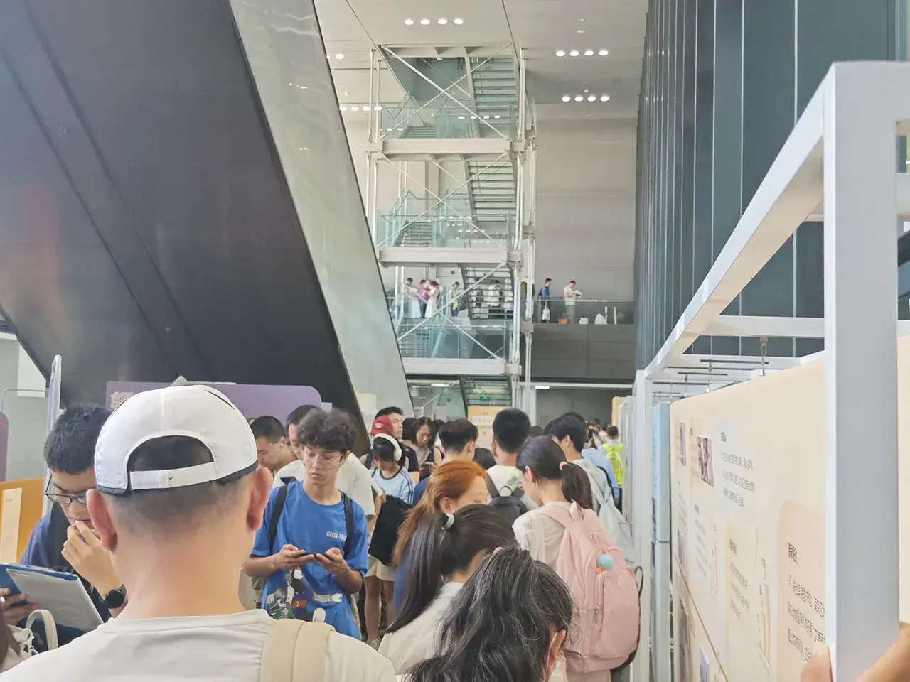
进馆需要刷身份证或是读者证。在排队的过程中把电子读者证办好了，进来有个办实体读者证的机器，本来还想打一张纪念一下，结果提示有电子的了不给办了🫢！
国图里居然都有卖纪念币的！-￥30。
11:52 座无虚席
{kind=link}
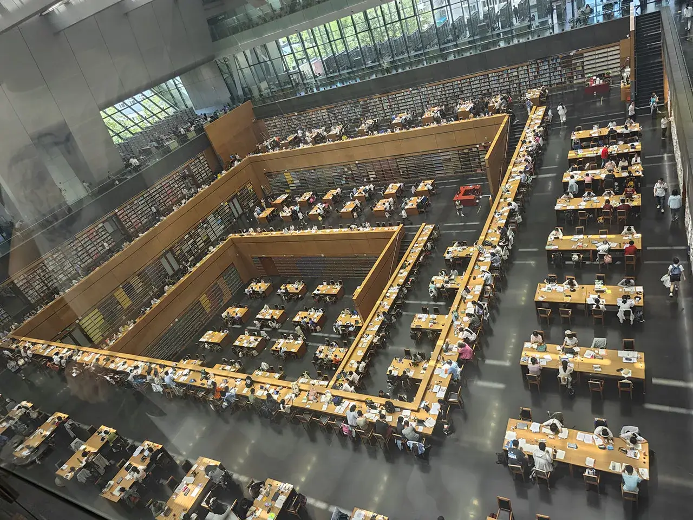
本来还想电脑带过来 coding 一下，但是又想到之后还得再逛逛，背着电脑属实太重，就只好在图书馆里用 iPad 上网冲浪了。等到晋爷和豫爷到位，冀爷还有一段时间。决定先在图书馆逛一圈，我刚一起身座位就被人抢走了！
这个图书馆很大，而且也有插座，但是人实在是太多了，因此还是觉得小小的福建省图更舒服！
12:05 北平盛世
{kind=link}
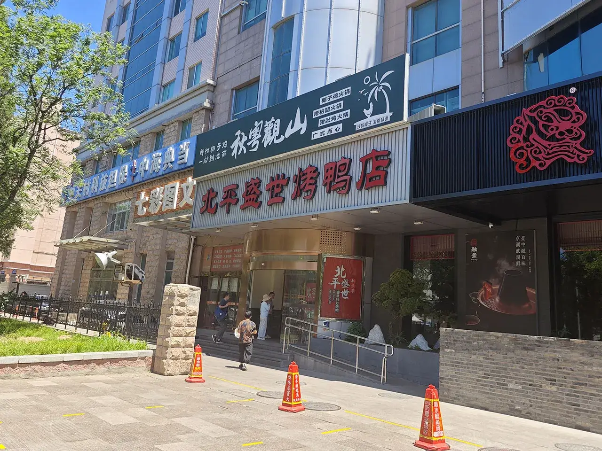
之后，我们决定带未咋来过北京的晋爷和豫爷去吃一下北京烤鸭，在美团上看了一家感觉还不错的，就在图书馆旁边，整！
12:31 经典套餐
{kind=link}
{kind=link}
{kind=link}
{kind=link}
{kind=link}
{kind=link}
牡丹烤鸭
唯有牡丹真国色，花开时节动京城？这个京城不应该是洛阳？我读书少不要骗我！
美团上选了一个经典套餐，￥417。前面上的菜还是很快的，味道也挺好，结果烤鸭一直迟迟不上，四个人联机打麻将都打了好久，实在不耐烦，催了好几次，最后 13:38 终于吃上了🤧。好消息，不是预制菜，坏消息，等餐实在太久了影响了体验。这家的烤鸭蘸料有桂花糖，味道还是不错的，下次再也不来了！
14:46 雍亲王府
{kind=link}
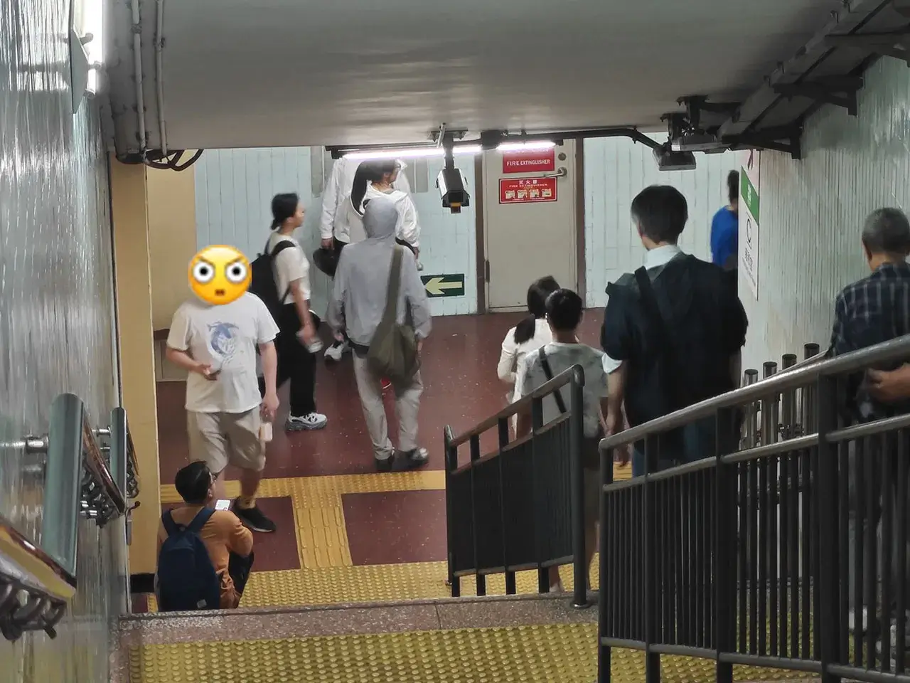
吃完饭后得找个地方逛逛。我提议去颐和园坐游船，因为靠西便于晋爷和豫爷早早回去休息。冀爷提议去东边的雍和宫拜一拜，晋爷和豫爷拿不定主意。刚好雍和宫我也没去过，最后就还是去雍和宫了。国家图书馆站-4 号线大兴线-西直门站-2 号线-雍和宫站，￥4。
结果带路的冀爷自己坐错车了！还得在门口等他🤪。
14:58 飞檐斗拱
{kind=link}
{kind=link}
{kind=link}
{kind=link}
{kind=link}
{kind=link}
{kind=link}
{kind=link}
{kind=link}
{kind=link}
{kind=link}
{kind=link}
{kind=link}
{kind=link}
{kind=link}
{kind=link}
{kind=link}
{kind=link}
{kind=link}
{kind=link}
不太能叫出各个建筑的名字，放一起好了~
雍和宫门票￥25，进去还送一捆香。按攻略说各个殿拜着有着不同的效果，什么事业，姻缘，学业，健康，财缘巴拉巴拉……俺不信这玩意就只顾着欣赏建筑了（真是一个假福建人！）。雍和宫鲜艳的红墙黄瓦还是很好看的。
最后他们烧香拜完一圈还省了一点点香，说只要有财缘就不愁事业姻缘健康了！于是全在求财缘处把香烧完了🤪。
16:50 冰雪皇后
{kind=link}
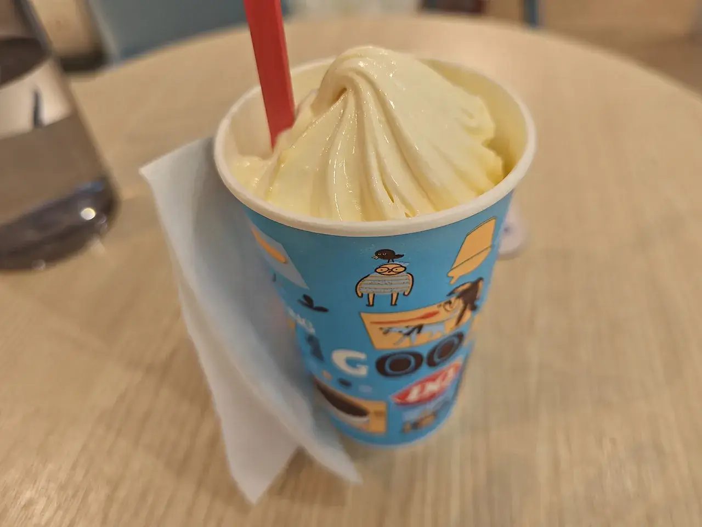
再逛一个地方可以散了。冀爷又是经典西单大悦城了。几个粗人也没啥想逛街的，我看着北京 DQ 挺多的，在福州估计也不太容易吃到，就买了一杯冰激凌（好贵啊！）。然而，粗人也没觉得比其他冰激凌好吃在哪🥴。
{kind=link}
17:45 散了散了
{kind=link}
最后瞎逛了好一会儿，撤了。也许要很久以后才会再见？这天是周六，还有两天他们就要开始上班咯😭！
18:50 酒店休息
{kind=link}
{kind=link}
前一天点了一张比萨后估计送了个啥券，第二单￥19 能买到一大堆东西。
不出门了！酒店里最后闹一闹睡了。
6.22
06:15 安河桥北
{kind=link}
跟同学聚餐完毕，这回是真要离开北方咯！之前特意买了 G1 07:00 北京南-10:24 南京南，￥533。从性价比来讲可能不是一个好的选择，但主要也是想体验一下传说中的 1 号高铁是什么样的😇。
安河桥
我知道 那些夏天
就像青春一样回不来
代替梦想的也只能是勉为其难
我知道 吹过的牛逼
也会随青春一笑了之
让我困在城市里 纪念你
我知道 那些夏天
就像你一样回不来
我已不会再对谁满怀期待
我知道 这个世界
每天都有太多遗憾
所以你好 再见
06:29 北京南站
'20227019024','这里要输入密码才能看到！' %}
先留空。容我撰稿。
{% endAES %}